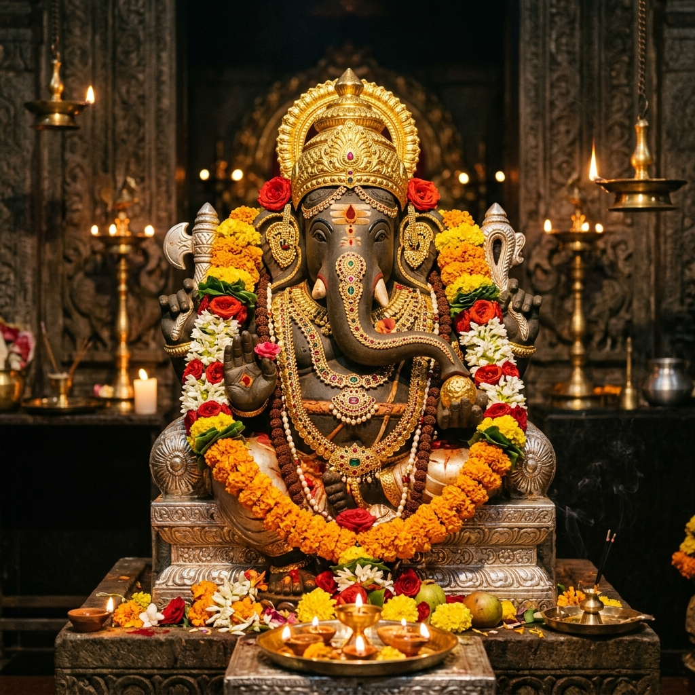
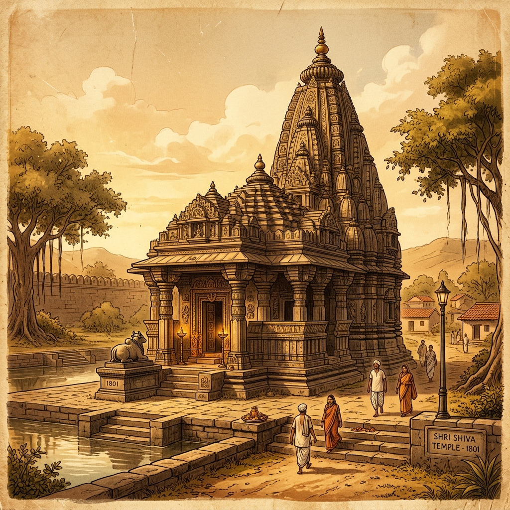
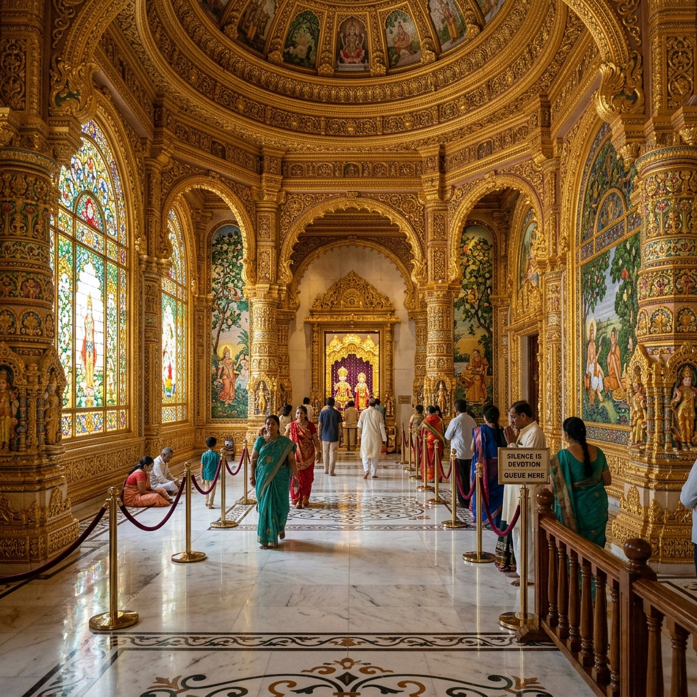
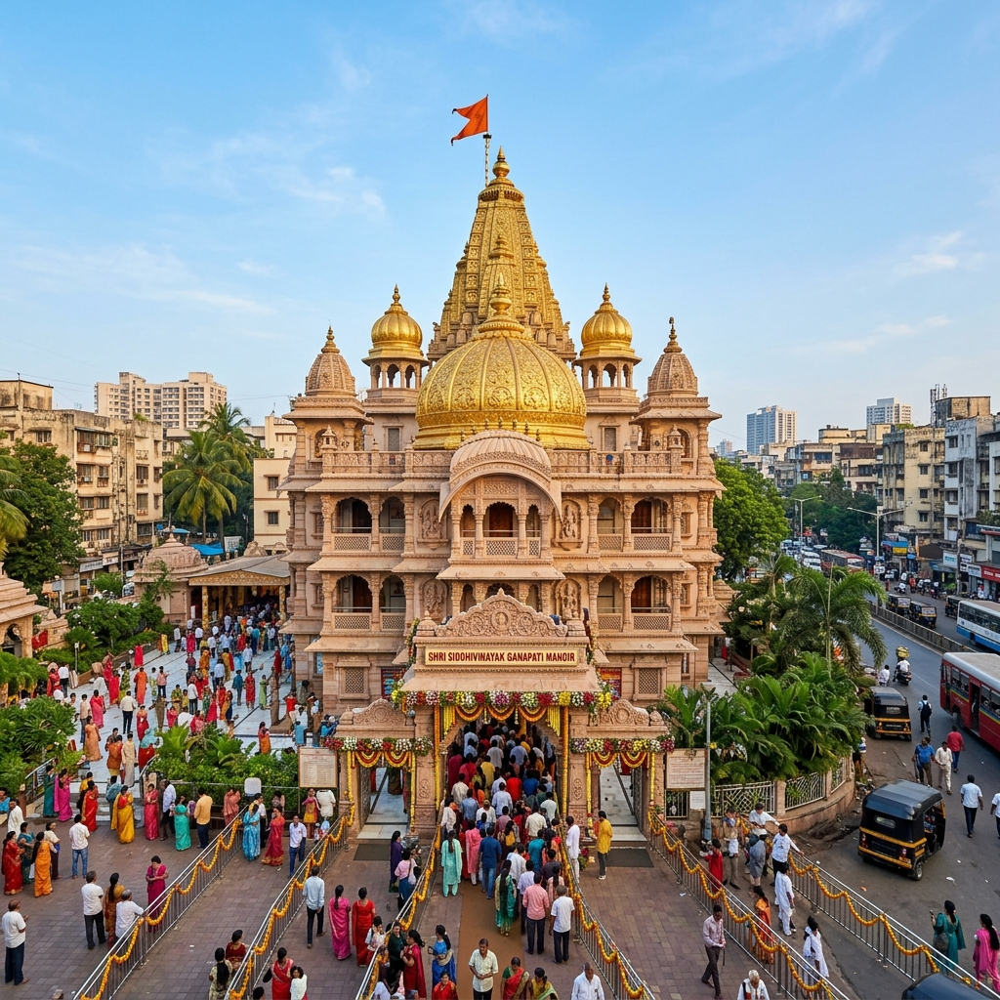

About Temple
Visiting Shri Siddhivinayak Temple is not just about darshan, it’s about experiencing faith in its most vibrant form. Located in the heart of Mumbai, the temple carries a powerful spiritual energy despite the busy city around it. People from all walks of life, including celebrities and common devotees, come here with strong belief that Lord Ganesha fulfills wishes. The atmosphere, especially during early morning or Tuesday darshan, feels deeply devotional and uplifting.
Vibrant Faith
Heart of Mumbai
Uplifting Energy
Belief & Devotion

History & Significance

The temple was originally built in 1801 by a woman named Deubai Patil, who had no children and wanted others to be blessed with offspring. Over time, it became one of the most important Ganpati temples in India. The idol of Lord Ganesha here is unique, with the trunk tilted to the right (Siddhivinayak form), which is considered very powerful and sacred in Hindu belief. Today, it is one of the richest and most visited temples in the country.
Est. 1801
Deubai Patil's Blessing
Siddhivinayak Form
Right-Tilted Trunk
What Makes It Unique
Discover the unique factors that set Siddhivinayak Temple apart from other shrines.


Travel Guide
Convenient ways to reach the temple from different parts of Mumbai.
Option 1: Railways & Local Cabs
The nearest railway station is Dadar (Central & Western lines hub). From Dadar station, you can take a taxi or auto-rickshaw and reach the temple in about 10–15 minutes.
Dadar Hub: 10-15 mins awayOption 2: City Buses & Metro
BEST buses run frequently to Prabhadevi from all major parts of Mumbai. Metro and ridesharing app services are also highly convenient and direct.
Local BEST Bus ConnectivityOption 3: Direct Driving
You can drive directly to Prabhadevi via Western Express Highway or Senapati Bapat Marg. Paid parking spots are available in adjacent commercial buildings.
Essential Information
Important details regarding timings, queues, and ideal visiting slots.
Timings & Tuesdays
Opens at 5:30 AM. Tuesdays are considered highly auspicious, attracting large crowds. Weekday mornings are best for a quiet visit.
Entry & Bookings
General darshan is free. Paid fast-track/VIP entry options are available online through the official trust portal to reduce wait times.
Best Time to Visit
Open year-round. Ganesh Chaturthi brings massive crowds and festive energy, though queues can take several hours.
Location & Coordinates
Prabhadevi, Mumbai, Maharashtra, India